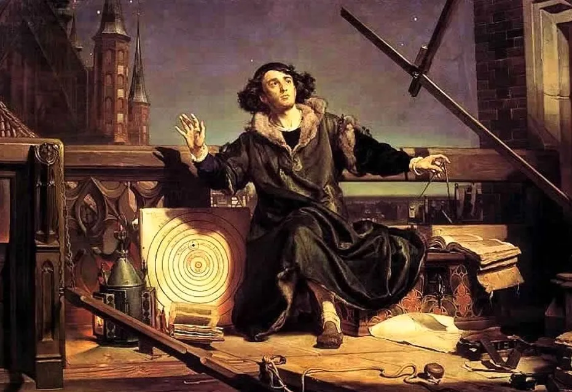
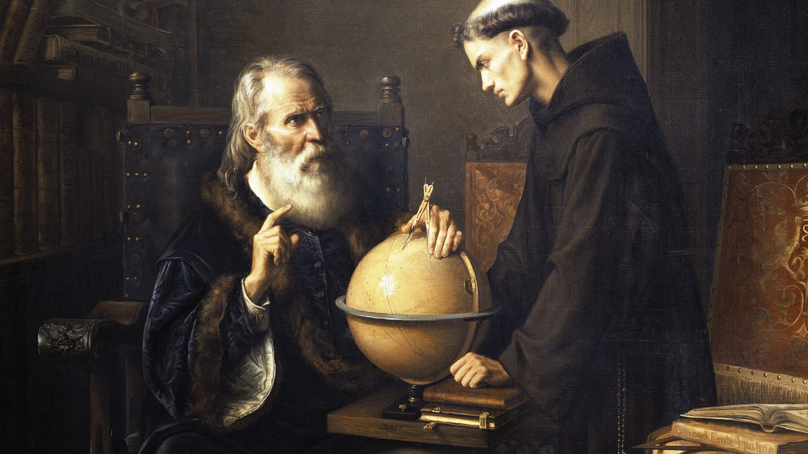

.jpg)
Long before the world started insane science stuffs, people believe in simple observable yet seems to have cause-and-effect reactions. For example, the elements before are just air, water, earth, and fire. They believe that all other things are just derivatives of these 4. They also believe in “Primum Mobile” which is the energy that moves the universe around the earth. And they believe that the earth is flat. They believe that the alignment of the planetary bodies influences human health and most of the time cause sickness and death. That is why endemic viruses are also called “influenza”. Speaking of sickness, they also believe that imbalance of yellow bile, black bile, blood, and phlegm can cause sickness or death that is why they blood let.
But because of technological advancements and thanks to Medieval scholars, they discovered new knowledges that are sometimes stopped by the government way back then but still prevails and even change the world views on things not exposed before.

Nicolaus Copernicus (1473–1543) was a mathematician and astronomer who proposed that the sun was stationary in the center of the universe and the earth revolved around it. Galileo Galilei then invented the telescope in 1609 and proved that heliocentric force proposed by Copernicus was correct. Even though Galileo was sentence by the Roman Catholic in the inquisition, scholars started using telescopes as well to testify the idea.

Not only the planetary knowledge, but people also argue how life started. Of course, the basic answer is “We are created”. But science begs for more concrete answers and Charles Darwin come up with the idea that we evolve from a species which has limbs as humans. So, an ape-like being is where humans came from. These intrigues religious beliefs and this is now a theory. This is somehow debatable. Even I don’t believe in this theory.
People also wanted to find out why people behave like a way or another. Different massage therapies were given. Even hysterical women are treated with tremoussoir because they believe that hysterical women are just deprived from their cravings. Not only that, but earlier era also uses trepanning which is drilling a hole in their skull to cure seizure and mental illness. Until modern psychology began. It was believed that modern psychology started on 1879 when Wilhelm Wundt—also known as the father of modern psychology—established the first experimental psychology lab. From that moment forward, the study of psychology would evolve, as it still does today. And definition on mind consciousness was published by Sigmund Freud. This became the big kick of psychology on humanity. I guess it’s safe to say that I personally uses this knowledge often. And this is great! I don’t want to see people with open skull on the streets. YUCKS!
There are lots of knowledge unravel throughout time. The knowledge learned from the ancient times getting changed or revised for further understanding leads to know views on world things. That is why being open to new things isn’t really a bad thing if they are still in the right path.
In conclusion, new explanations lead to new understanding. And new understanding leads to innovation both in technology and lifestyle. Society that benefits purely on new trends and more convenient technology.